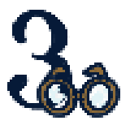

Projekt Portefølje
Velkommen til min projekt portefølje.
Her på siden kan du se en oversigt over de forskellige projekter, og
tema'er vi har været igennem på 1. semester. Under hvert punkt er der
en mere uddybende forklaring af indholdet for hvert tema.
Der vil blive lagt stor vægt på vores afleveringer, og hvordan vi har
arbejdet med de forskellige opgaver.
I Tema 1
lå fokus på introduktionen til skolen og den nye hverdag på
campus. Vi blev blandt andet introduceret for en masse af de
grundlæggende værktøjer, vi skal bruge igennem vores arbejde med
digital design.
Vi arbejdede desuden med de mest enkelte elementer indenfor HTML og CSS. Vi stiftede også bekendskab med github, hvor helt store forkus lå på at skabe en god arbejdsstruktur fra start.
Tema 2
som har været vores andet forløb på 1. semester, gik ud på at
benytte de redskaber vi havde lært i tema 1, og arbejde videre med
dem. Vi arbejdede med mere komplekse layouts, og fik en bedre
forståelse for hvordan HTML og CSS fungerer sammen.
Vi arbejdede også med responsivt design, og lærte hvordan man kan
tilpasse sine designs til forskellige skærmstørrelser. Desuden blev
vi introduceret til Figma, og fik en grundlæggende forståelse for
hvordan benytter softwaret til at lave wireframes og prototyper.
Vi havde to større afleveringer i dette tema, hvor vi skulle lave en
simpel hjemmeside ud fra et givent design, samt bestå
studiestartsprøven.
Tema 3
er for mig et uforhlemmeligt forløb. Vi arbejdede med
grundlæggende UX / UI, og dykkede ned i designprocess og udvikling
af brugergrænseflader. Temaet fokuserede på at skabe brugervenlige
og æstetisk tiltalende digitale oplevelser. Vi lærte om
brugercentreret design, wireframing, prototyping og
brugertestning.

Gennem temaets projekt, som var et selvvalgt emnesite, fik vi
mulighed for at anvende teorien i praksis og udvikle vores
færdigheder inden for UX / UI design.
Dette tema har givet mig en en god grundforståelse for UX / UI
design, som jeg kan bygge videre på i fremtidige projekter. Det har
desuden været sjovt at dykke ned i et emne, som jeg personligt
finder meget interessant.
Tema 4 var et forløb hvor vi fik mulighed for at arbejde mere dybdegående med de grundlæggende værktøjer, modeller og teknikker indenfor multimedieproduktion. I tema 3 fik vi udlveret den første kode med javascript, og I tema 4 arbejdede vi videre med at skabe interaktive elementer på vores hjemmesider.
Vi lærte om variabler, funktioner, betingelser og loops, og hvordan
man kan bruge disse koncepter til at skabe dynamiske og engagerende
brugeroplevelser.
Imens vi udarbejdede temaets aflevering, som bestod af et
emergencysite, fik vi mulighed for at anvende vores nye færdigheder
i praksis og udvikle vores forståelse, for hvordan vi kan benytte
javascript.
I Tema 5
som var vores seneste forløb på 1. semester, fokuserede vi på at
integrere alle de færdigheder og værktøjer, vi havde lært i de
foregående temaer, til at skabe en sammenhængende og funktionel
multimedieproduktion. Vi prøvede derudover, kræfter med et større
gruppeprojekt. Denne opgave havde til formål, at redesigne en
hjemmeside. Ligesom hvis det var en opgave for en fungerende
virksomhed.

Konklusion I opsamlingen af 1. semester på multimediedesignuddannelsen har dette projekt givet et overblik over de forskellige temaer og projekter, vi har arbejdet med.
Husk: at klikke ind på hvert tema. Her kan du læse uddybende om det
indhold vi har været igennem. Der er lagt fokus på at forstå de
forskellige færdigheder og værktøjer, som vi har arbejdet med i
vores afleveringer.